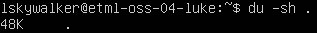
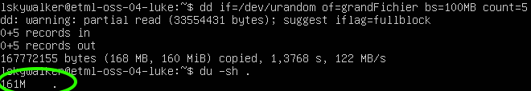
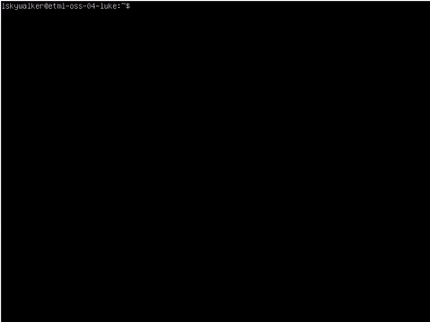
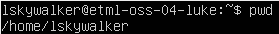
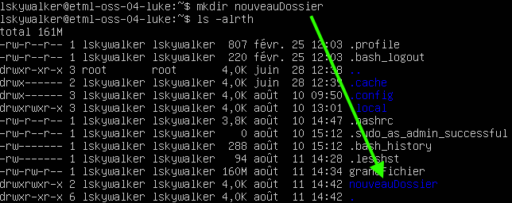

Compétences qui vont être acquises
- Visualiser la charge système
- Modifier la configuration du système
- Gérer les logiciels (Installation / Désinstallation)
- Afficher les informations du réseau
- Travailler avec des archives (création/compression/décompression)
- Écrire et éxécuter un mini programme très simple
À ton avis, la commande ‘TOP’ sert à quoi ?
Système d'exploitation
Toutes les activités sont basées sur les opérations décrites ici.
Un système d'exploitation est un peu comme un chef d'orchestre ayant pour musiciens des composants électroniques.

CPU et RAM
On peut observer le travail d'orchestration avec la commande top (écrire top puis valider avec la touche enter)
top

Décryptage du résultat
Partie 1 : Résumé
Cette partie comporte 3 points:
- Le nombre de processus : 98 programmes chargés dont 1 en cours d'éxécution et 97 qui dorment.
- L'utilisation du processeur: 0.3% utilisé et 99.7% en attente de travail.
- L'utilisation de la RAM : 1987.8Mo disponible dont 148.3Mo utilisés et 1208.3Mo de libres.
- L'utilisation du SWAP : 2Go au total dont 0 utilisé.
Partie 2 : Détail des processus
Le processus en haut de la liste est justement celui qui permet d'afficher les informations sur le processus.
Voici la traduction des colonnes:
- PID: process id => Numéro d'identification du programme (géré par l'OS et permet de l'arrêter par exemple)
- USER: utilisateur qui a lancé le processus
- PR: priorité (-20 = priorité la plus importante)
- NI: priorité demandée par le programme
- VIRT: mémoire virtuelle utilisée par le programme
- RES: mémoire RAM utilisée par le programme
- SHR: partie de mémoire partagée dans RES
- S: statut (R=running, s=sleeping, i=idle, etc...)
- %CPU: pourcentage d'utilisation du processeur
- %MEM: pourcentage d'utilisation de la mémoire
- COMMAND: nom du programme
Espace disque
Quand il n'y a plus d'espace pour stocker des nouvelles données, un ordinateur peut se bloquer. Il est donc utile de pouvoir contrôler l'espace sur les disques (SSD ou HDD) et aussi observer combien d'espace est pris par un dossier.
Lister les disques et leur partition
Une commande pratique est la suivante:
sudo df -h

On voit que le disque de 20Go est rempli à 24%.
Calculer la taille d'un dossier
Pour savoir combien d'espace est utilisé par un utilisateur, il suffit de se loguer puis d'éxécuter la commande suivante:
du -sh .

Ici, seulement 48Ko sont utilisés. Pour vérifier que c'est correct, on peut ajouter un fichier d'environ 150Mo et vérifier:

Voulez-vous en savoir plus sur le résultat de la commande top, du, df, dd ou vous aimeriez savoir où on peut trouver les informations décrites précédemment sans l'utilisation d'Internet ?
Pour cela, il existe la commande man (manuel d'utilisation). Par exemple, pour top, on peut écrire:
man top
Une fois la commande lancée, on peut:
- Quitter en appuyant sur q
- Tourner les pages (avancer la lecture) en appuyant sur enter
- Chercher un terme en appuyant sur / puis en saisissant un mot puis en appuyant sur enter. Ensuite, on appuie sur n (next=suivant) pour chercher le prochain terme
En utilisant ce qui a été expliqué, que représentent les lettres us et sy à la deuxième ligne du résultat de la commande top ?
US et SY
Un système Linux est basé sur des fichiers de configuration. Ces fichiers contiennent des indications que le système d'exploitation (au travers de ses programmes) interprète. C'est un peu comme un automobiliste qui regarde les panneaux de signalisation pour savoir à quelle vitesse rouler à l'exception près qu'un programme, lui, ne fait jamais d'excès de vitesse ;-)
Ajouter un message de bienvenue
Pour commencer, nous allons ajouter un message au login. Pour cela, nous avons donc besoin de 2 éléments:
- Quel fichier de configuration ?
- Comment éditer un fichier en ligne de commande ?
Bash
Pour la première question, un indice utile est que le programme lancé au login (interpréteur de commande) se nomme bash. Comme tout programme, on peut donc lire son manuel:
man bash
Nano
Il existe plusieurs éditeurs de fichier en ligne de commande et même si vi (visual editor) est le plus connu, nano a le mérite d'être plus facile à prendre en main et c'est donc celui qui va être utilisé.
En lien avec la partie précédente, pour éditer un fichier la commande est la suivante:
nano unFichierAEditer
En remplaçant unFichierAEditer par le fichier de configuration de login, on peut alors ajouter une ligne tout en bas du fichier (descendre avec la flèche en bas) pour saluer l'utilisateur:

Résumé des commandes à effectuer:
- Lancer l'éditeur (nano ...)
- Se déplacer à la fin du fichier (flèche en bas)
- Écrire la commande (echo "Bonjour Luke")
- Sauvegarder (ctrl-o)
- Quitter (ctrl-x)
Pour vérifier si cela fonctionne, il suffit de se déloguer :
exit
Puis de se reloguer:

Défi
En s'inspirant de ce qui a été fait précédemment, votre mission est d'ajouter la date au moment du login:

Il est souvent utile de sauvegarder certains fichiers ou dossiers pour les mettre en lieu sûr (clé USB ou cloud).
Avant de pouvoir faire un backup, il faut pouvoir se ballader dans le système de fichier sans l'aide d'un explorateur traditionnel qu'on contrôle avec une souris.
Navigation dans le système de fichier
Quand on se logue, on arrive dans le répertoire de l'utilisateur qui est habituellement /home/nomUtilisateur.
Pour savoir où on est dans la ligne de commande, on peut toujours utiliser pwd :

À partir de là, on peut, par exemple, lister les éléments présents dans ce répertoire:

Créer un répertoire
Pour ajouter un dossier (ou répertoire) la commande est mkdir:

Pour ‘ouvrir' le dossier, on utilise la commande cd et ensuite on peut vérifier que le dossier est bien vide avec la commande précédente de listing et aussi voir qu'on est dans un sous-dossier depuis la racine (/):

Zipper un répertoire
Un format traditionnel pour faire des backups de répertoires entiers est le zip.
Pour sauvegarder le répertoire qui a été créé précédemment, la commande est la suivante:

Pour vérifier que cela fonctionne, supprimons le dossier et rechargeons-le depuis la sauvegarde: